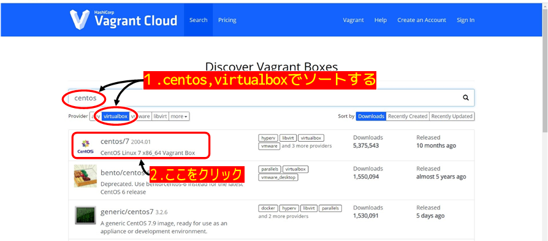
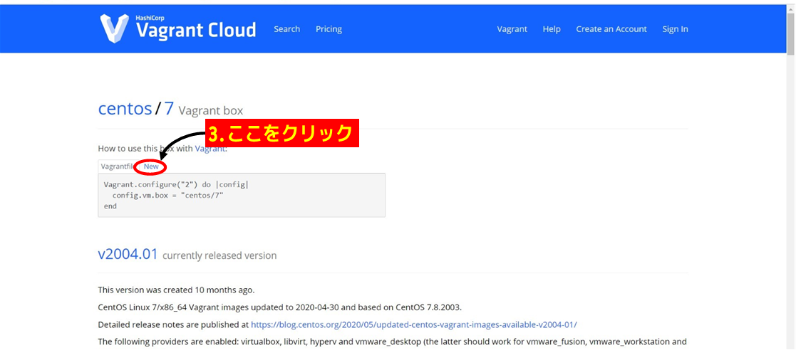
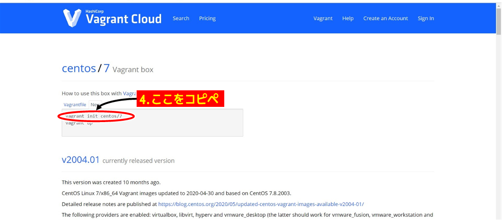
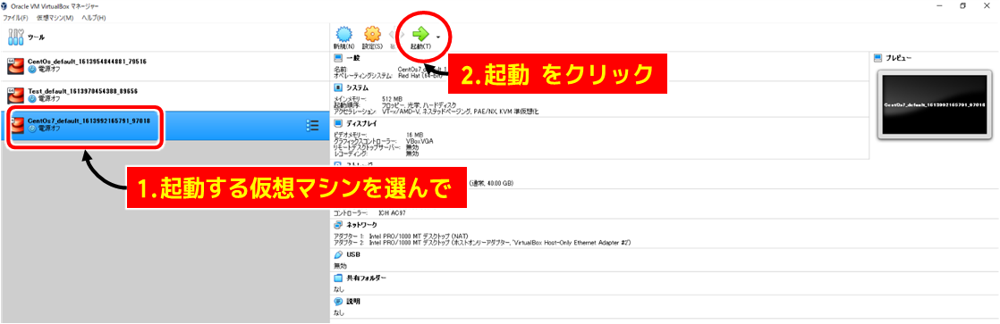
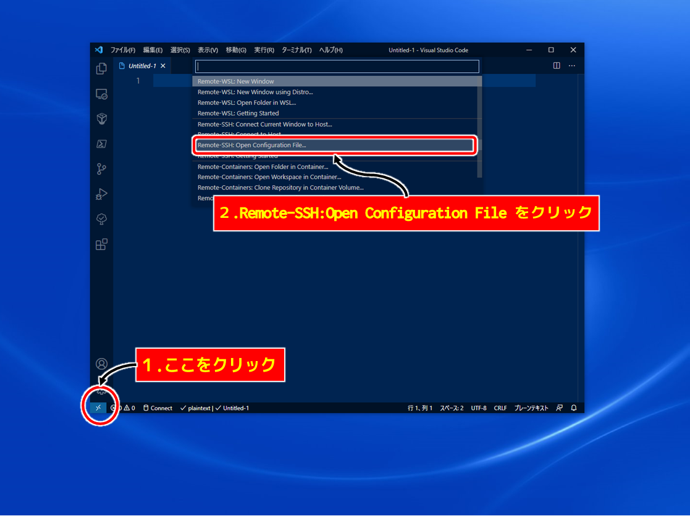
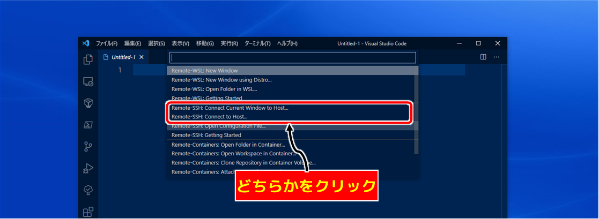

sudo vi /etc/ssh/sshd_config
を実行します
sudo と文頭に入力することで、続くコマンドを管理者権限をもって実行することができます
今回のコマンドでは、
本来は編集できないはずの sshd_config というファイルを編集ソフトの vim で編集しちゃおう、ということですね
コマンドを入力するとずらっと設定が表示されるので
i を押してINSERTモードにします
PasswordAuthentication という個所を探して
PasswordAuthentication yes
# PasswordAuthentication no

[ドットインストール]ローカル開発環境の構築[windows編]
現在CentOS6がサポート終了しているので、仮想マシンの起動はできるのですが、
必須のアプリケーションをインストールすることができません
アマゾンのAWSを利用する手もありますが、クレジットカードが必須など抵抗がある方もいらっしゃるかと思います
また初心者の私としてはドットインストールなどで解説を受けながら進めたいわけです
ということでやってみたのが
仮想マシンのOSを CentOS6.8 → CentOS7以降 に変更する
実に単純な解決方法ですね
CentOS7以降だとその後のアプリのインストール方法が若干変わるので、その都度説明します
#4 までは教材通りで大丈夫です
#5 の MyCentOSフォルダに移動するところから別ルートに入ります
ドットインストールをやっていない方は次の下準備をやっていただければ問題なく進めるかと思います
下準備
VirtualBox 、 Vagrant 、 PowerShellをインストール(PowerShellはMicrosoftstoreでダウンロードできます)
仮想マシンを立ち上げる用のフォルダを作る
PowerShellでそのフォルダへ移動しておく
目次-
１.CentOS7以降の仮想マシンを作る
-
２.仮想マシンにログインする
-
３.必須アプリケーションをインストールする（準備中）
１.CentOS7以降の仮想マシンを作る
教材ではここで
vagrant init bento/centos-6.8
というコマンドを実行するわけですが、この通りに実行すると CentOS6.8がインストールされてしまいます
そこで
このページ でCentOS７以降の設定ファイルを拝借して、それで仮想マシンを立ち上げます
とりあえず virtualbox、CentOs などでソートしてこれだ、と思った7以降の CentOS のBOXをクリック
今回は一番目立っている↓この centos/7 2004.01 を例に説明します
他のBOXでも手順は同じです
 Newをクリックして
vagrant init centos/7
という部分を、開いておいた PowerShell にコピペして実行します
 
これで MyCentOSフォルダ（下準備で作ったフォルダ）に CentOS7 を立ち上げるための vagrantfile が作られます
この vagrantfile を何らかのエディタで開いて編集します
その中に
# config.vm.network "private_network", ip: "192.168.33.10"
という箇所があるので
# を消して有効化して保存します
ip ～ の部分は仮想マシンの住所になる番号です
複数の仮想マシンを立ち上げる場合は ip がかぶらないように少し変更しておくとよいかと思います（例えば "192.168.33.11"）
あとは PowerShell で
vagrant up
を実行です
途中で何か聞かれるかもですが OK とか Y とかで進めます
これで起動完了です
vagrant status
を実行して
running と表示されていれば成功です
ちなみに
vagrant halt
を実行するとシャットダウンできます
２.仮想マシンにログインする
教材では次に PuTTY というアプリをインストールし、これを使ってログインするのですが、
現バージョンでは残念ながら設定をいじらないと PuTTY ではログインできません
ということで別の方法でログインします
色々あるのですが、とりあえず４つ紹介します
その１ 直接ログインする
その２ PowerShellからログインする
その３ VScodeからログインする
おまけ PuTTYでログインする
その１ 直接ログインする
VirtualBoxを開くと仮想マシン一覧を見ることができます
その中からいじりたいマシンを選んで「表示」をクリックするとちょっと小さい窓が出て
 直接仮想マシンを操作することができます
ユーザー、パスワードはどちらも vagrant です
入力してEnterでログインできます
フォントがとげとげしくて、コピペが使えないのが難点です
Tabキーでの入力補完はできるので、環境を整えるだけなら十分ですね
その２ PowerShellからログインする
一番簡単です
vagrant up をした場所で
vagrant ssh
を実行する
以上
ちょろすぎます
Vagrant で作った仮想マシンならこれでいけますが、それ以外のシチュエーションでは使えないのでちょっと補足です
補足と言いながら少々長いです
ログインできればそれでよし、の場合は読み飛ばしてください
まず ssh というのはネットワークで他のパソコンをいじることができる仕組みです
よそ様のパソコンを好き放題出来てしまうわけなので、つなげる段階で厳しく審査されます
具体的には鍵穴ファイルとそれと対になる鍵ファイルを作っておいて（※正式な名前ではなく、私のイメージです）
接続先に鍵穴ファイルを、接続元に鍵ファイルを設置します
ログインするときは、鍵穴ファイルに対応した鍵ファイルを見せないとログインできないという仕掛けです
（昔のバージョンではパスワードでいけたようですね）
どうやって見せるかというと
ssh -i 自分のパソコンのカギのある場所 ユーザー名@接続先の住所 -p 接続先のポート
と実行します
-i は鍵を見せます
-p はこの入り口から入ります という意味です
実行する場所は vagrant ssh の時と違いどこでもOKです
私の場合だと
ssh -i D:/LocalServer/CentOs/.vagrant/machines/default/virtualbox/private_key vagrant@192.168.33.10 -p 22
となります
説明すると
-i D:/LocalServer/CentOs/.vagrant/machines/default/virtualbox/private_key は
Dドライブの、LocalServerの中で
CentOsという仮想マシンを立ち上げていると、このパスになります
そこから先のパスは特にいじってなければ共通です
vagrant@192.168.33.10 は
vagrant はユーザー名ですね
@ 以降は vagrantfile の編集時に決めたipを入力します
何もしていなければ 192.168.33.10 です
最後の -p 22 は22番のポートから入りますよという意味です
実は通常は書く必要がありません
ssh とした時点で、22番から入りますってことになっているみたいですね
では何のためのオプションなのかというと
後で少し触れますが、この仮想マシン
実はもう一つの住所と入り口があります
そっちから入るときには指定する必要があるということなんですね
あとはセキュリティ強化のために入り口を普段と違うところに開けるというケースもありそうですね
その３ VScodeのRemote-SSHでログインする
個人的に一番おすすめです
一応この機能はまだPreviewなので不思議なことが起こるかもしれません
まずはVScodeの拡張機能の Remote-SSH をインストールします
次に設定ファイルを作成します
左下のボタンをクリックして Remote-SSH:Open Configuration File を選びます
 設定ファイル候補が出ているので好きなファイルを開きます
選ぶとファイルが開くので設定を書き込みます
書き込む内容は
Host 好きな名前
HostName 192.168.33.10
User vagrant
こんな感じです
Host はこの接続の名前です
後からわかりやすい名前を付けましょう
HostName には接続先の住所を書き込みます
とくに変更していなければ 192.168.33.10 です
User は Vagrant で立ち上げたのなら vagrant でOKですね
保存したら、設定ファイルを作るときに使った左下のボタンをもう一度クリックして
今度は Remote-SSH:Connect ～ のどちらでもいいので選択すると接続が始まります
違いは上は今のウィンドウで、下は新しいウインドウで接続します
 パスワードを入力すればログイン完了です
さらに接続先のフォルダを表示させることもできます
（もう一度パスワードをきかれます）
ちなみに設定ファイルに
IdentityFile 自分のパソコンのカギのある場所
と追加するとパスワードの入力なしで接続できるようになります
カギについては その２ PowerShellからログインする の補足部分を御覧ください
VScodeで接続するとファイルを開くのが簡単になるし、コピペ、ドラッグ＆ドロップで編集もできるので色々便利です
おまけ PuTTYでログインする
PuTTYの上手な使い方を知らないので、いまいちメリットは感じられないのですが
接続先の設定を変えることで、鍵を使わなくてもログインできるようにできます
まずはどの方法でもいいので仮想マシンにログインします
設定ファイルというのは通常は好き勝手にいじるとよくないので、管理者権限がないと編集できません
てことで
sudo vi /etc/ssh/sshd_config を実行します
sudo と文頭に入力することで、続くコマンドを管理者権限をもって実行することができます
今回のコマンドでは、
本来は編集できないはずの sshd_config というファイルを編集ソフトの vim で編集しちゃおう、ということですね
コマンドを入力するとずらっと設定が表示されるので
i を押してINSERTモードにします
PasswordAuthentication という個所を探して
PasswordAuthentication yes
# PasswordAuthentication no
となるように # をつけ外しします
これはパスワードでのログインを認めますか？ いうことで
このように変更することで鍵ではなく、パスワードによるログインが可能になり、
PuTTYでログインできるようになります
逆にセキュリティを強化したいときにはパスワードでのログインを禁止したり、
別の項目をいじって、パスワードなしでログインできるようにできたりと実に怖いファイルですね